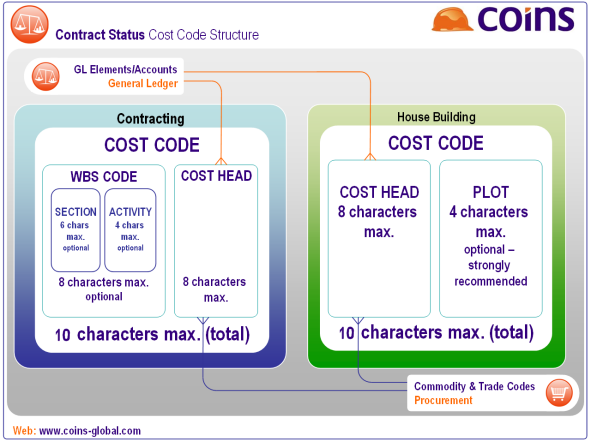
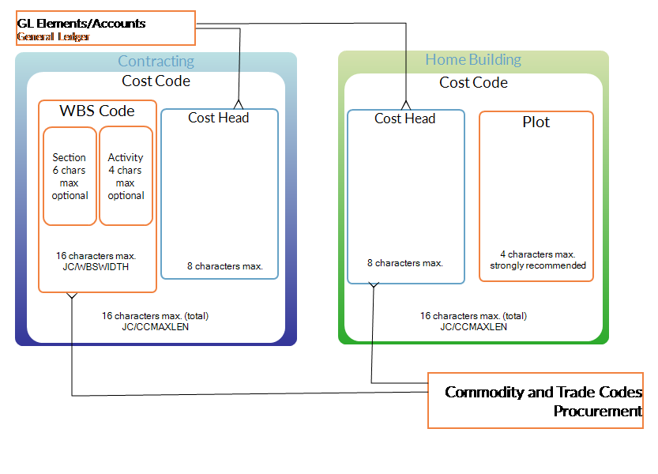

Cost Codes
Each cost code identifies a different type of cost on a . It can show where (the section), how (the activity), and with what (the ) the cost was incurred.
The cost code can be any combination of up to ten letters or numbers. The length and structure of the cost codes you use depend on the extent to which you need to costs. For example, you may only need one cost code for materials, or you may want different cost codes for each different type of material.
Although cost codes on each may be different, in practice several will use the same costing analysis. allows you to generate the cost codes on a from a set of standard (see ).
- The cost code can also optionally include parts of the WBS code: the section (typically a subdivision of the work, such as a physical area, that will usually be specific to one ), and/or the activity (typically a type of work, such as roadworks, earthworks or excavation).
- For housebuilding , the section corresponds to the plot, allowing you to record some costs against plots and some against sites. In this case activities are not used and the plot (section) comes after the .

To create cost codes:
There are different ways to create the cost codes for a :
Closing cost codes
You can close cost codes after the associated work is complete using Open/Close Cost Codes.
and cost codes
You define a set of standard
(using
Standard ) and a table of standard activities (using
Standard Activities). If needed, you can also define
-specific activities for individual
(using
Activities on the options menu within
for the
).